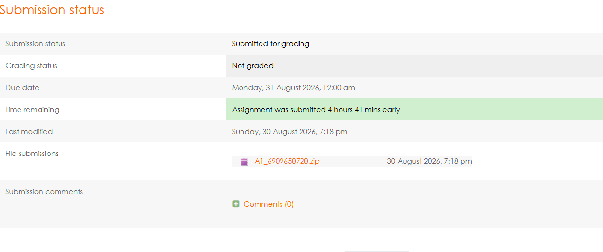
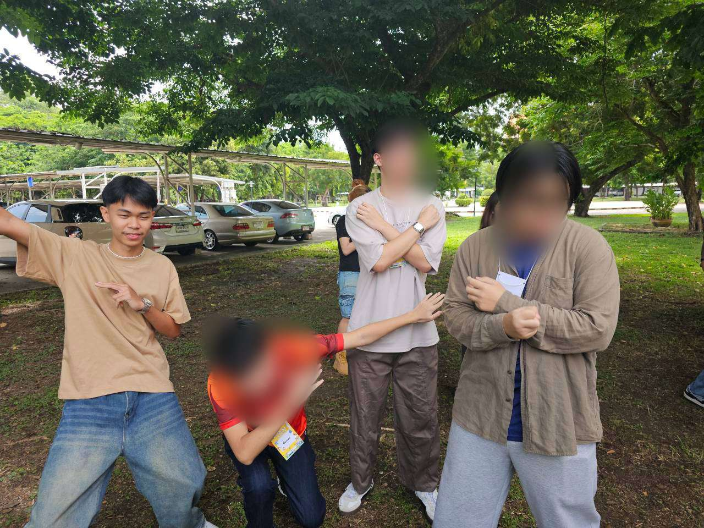

เว็บไซต์นี้เกี่ยวกับการพัฒนาทักษะด้านการเขียนโค้ด HTML และ CSS ส่วนประกอบด้วย โครงสร้างเว็บ และ
องค์ประกอบเนื้อหา
ถ้าเปิดเว็บผ่าน live server จะมีทั้ง client และ server
แต่ถ้าเป็นการคลิ้กเปิดไฟล์นี้โดยตรงจะมีแค่ฝั่ง client เท่านั้น
ดังนั้นในขณะที่เปิดเว็บไซต์จากเครื่องของตนเอง จะมี client และ server
เกิดขึ้นแล้ว
What I Built
How I Built It
พัฒนางานนี้โดยเรียนรู้จาก Ai และ สไลด์ Basic_HTML_CSS
และใช้เป็นเครื่องมือและแหล่งข้อมูลในการช่วยเรียนรู้และพัฒนา
ขั้นตอนการพัฒนางานนี้
- วางแผนและจัดโครงสร้างไฟล์
- เขียนโครงสร้างเนื้อหา
- ตกแต่งหน้าเว็บ
- ตรวจสอบและทดสอบการทำงาน
Reflection
- ปัญหาหรือความท้าทายที่พบคืออะไร และแก้หรือรับมืออย่างไร
- ปัญหาที่พบคือการจัดวางองค์ประกอบของหน้าเว็บให้สวยงามและเหมาะสมและการเขียนโค้ดให้อ่านง่ายและเข้าใจแบบสากล
แก้โดยการเรียนรู้จากตัวอย่างและ ai - จากการทำ A1 นี้ เข้าใจอะไรเกี่ยวกับการพัฒนาเว็บไซต์มากขึ้น
- การวางแผนและจัดโครงสร้างไฟล์
- การเขียนโค้ดให้ถูกต้องตามมาตรฐาน
- การตกแต่งหน้าเว็บให้สวยงามและเหมาะสม
- การลิ้งไฟล์ให้ถูกต้อง
- หากได้พัฒนางานนี้ต่อ อยากปรับปรุงหรือเพิ่มอะไร และเพราะอะไร
- อยากปรับปรุงการตกแต่งหน้าเว็บให้สวยงามและเหมาะสมมากขึ้น
- และอยากเพิ่มเนื้อหาเกี่ยวกับตัวเองให้มากขึ้น
My Portfolio
- Portfolio1
- Portfolio2
Title: CS100 A1:My First Learning Portfolio
Type:Course Assignment
Date:30 August 2026
Role:ผู้พัฒนา
Description:พัฒนาเว็บไซต์ Learning Portfolio ด้วย HTML และ CSS
Skills:HTML, CSS
Reflection:งานนี้ฉันศึกษาเรียนรู้การเขียน HTML และ CSS ทำให้ได้เข้าใจอย่างลึกซึ้งมากขึ้น ปัญหาที่พบคือการจัดวางองค์ประกอบของหน้าเว็บให้สวยงามและเหมาะสม ลองแก้จนหน้าเว็บมีความสวยงามและเหมาะสมมากขึ้น ถ้าพัฒนาต่อ จะพยายามปรับปรุงการจัดเรียงให้ดียิ่งขึ้น

Title: First Meet CS 2026
Type:Activity
Date:26 July 2026
Role:ผู้เข้าร่วม
Description:เข้าร่วมกิจกรรมพบปะนักศึกษาใหม่
Skills:ได้รู้หลักสูตรและวิธีใช้ชิวิตในมหาลัย
Reflection:เข้าร่วมกิจกรรมพบปะนักศึกษาใหม่ และได้เรียนรู้เกี่ยวกับหลักสูตรและวิธีใช้ชิวิตในมหาลัย ปัญหาคือยังไม่มีเพื่อนรับมือโดยการหาเพื่อนที่นั่งข้างๆ อยากจะปรับปรุงทักษะการเข้าสังคมของตัวเอง
